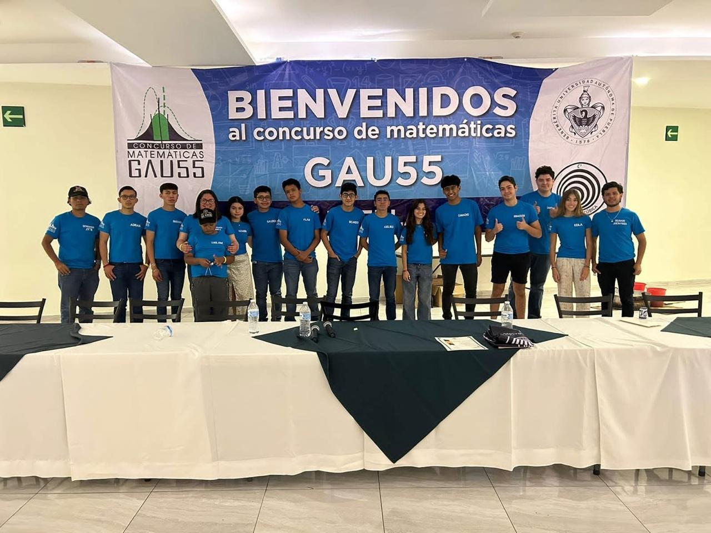
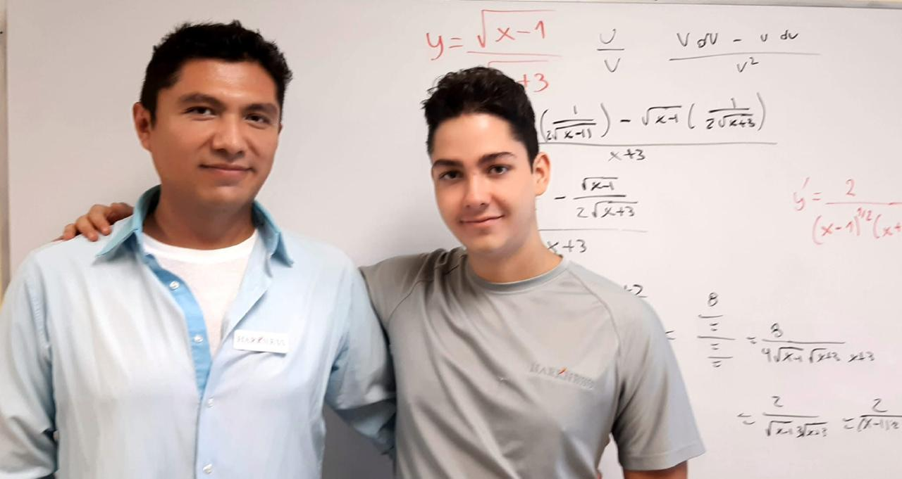
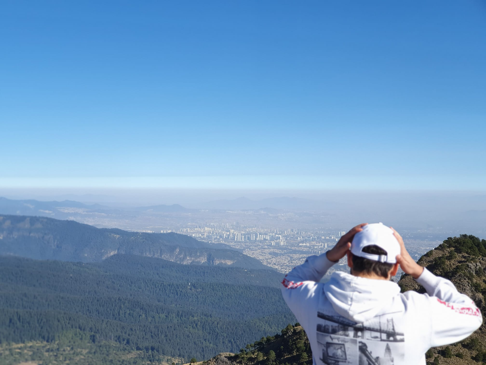
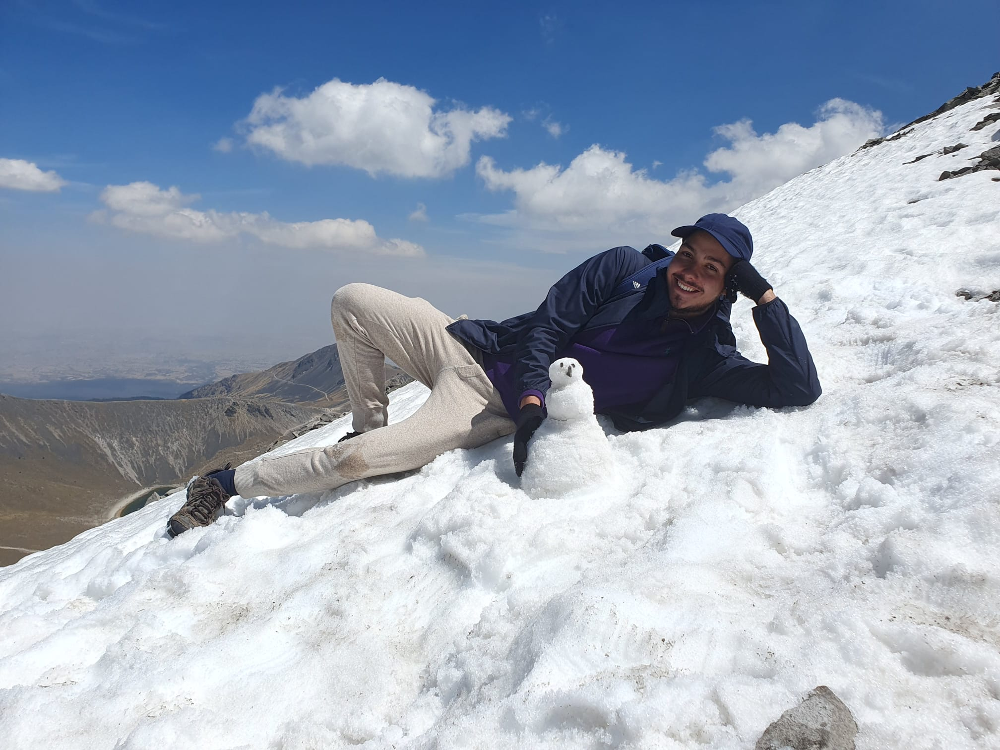
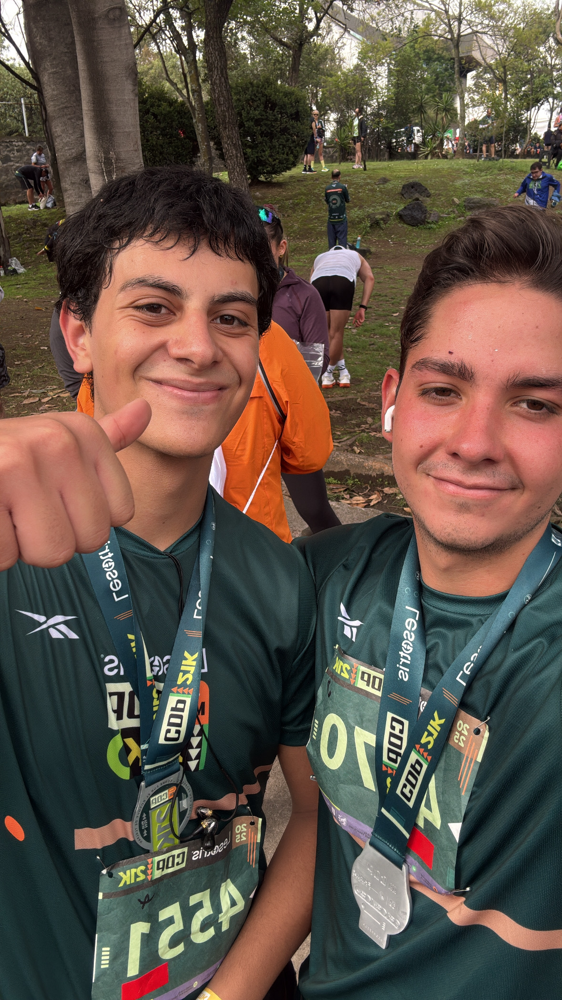

Hello, and thanks for taking the time to get to know me! On this page, I'll share a bit about who I am and what shaped me.
I've always been a curious kid — the kind who asks so many questions you almost want to duct tape his mouth shut. Jokes aside, that curiosity has driven me to explore different passions throughout my life.
At five years old, I confidently declared I would be a painter, scientist, writer, and restaurant owner. Fifteen years later, the first three are off the list, but the restaurant dream is still alive and well. Cooking has always fascinated me, because the only real limit is imagination (though my experiments don't always turn out edible).
Along the way, I discovered a love for mathematics that took me to two national competitions, spent six years as a competitive swimmer chasing big dreams, and recently ran my first half-marathon just to see if I could. Music is another constant in my life — the piano is my safe zone, where I can release emotions and enjoy the beauty of sound.
Another passion of mine is hiking. I love the challenge of the mountains and the peace of nature. Over the years, I've climbed Nevado de Toluca, La Malinche, El Pico del Águila, Iztaccíhuatl, among others — each one a reminder that the best views come after the hardest climbs.
 And then there's moving. If it were a professional sport, I'd have a gold medal by now: born in Mexico City, raised in Cancun, San Miguel de Allende, Puerto Vallarta, and then back to Mexico City for college. Each move was tough, but they made me far more adaptable and resilient than I ever expected.
So, who am I? A creative, ambitious, and versatile young man still figuring out his path — but having a lot of fun along the way.